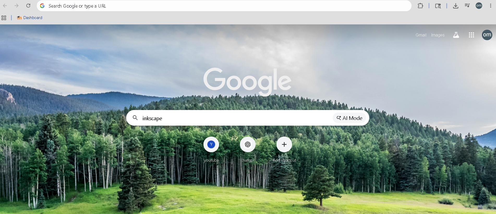
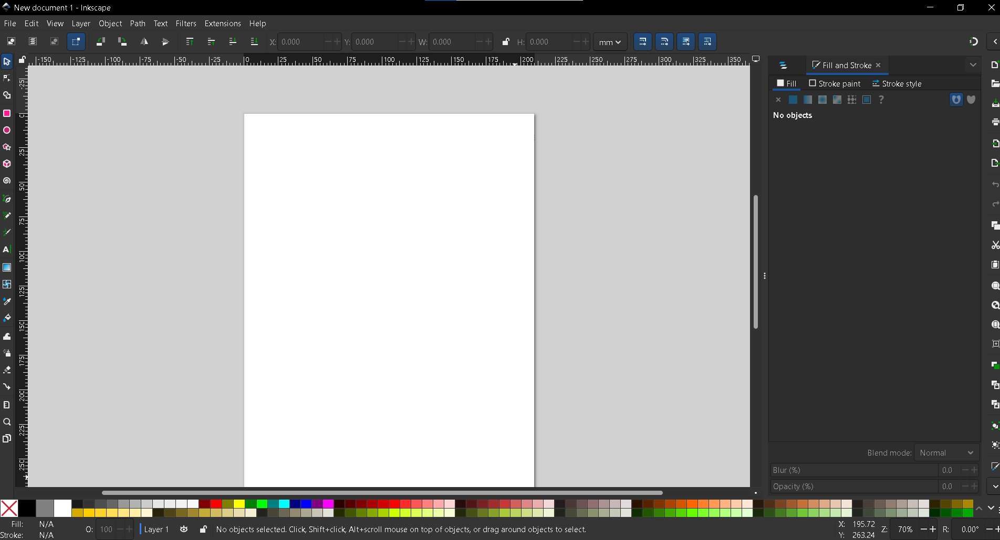
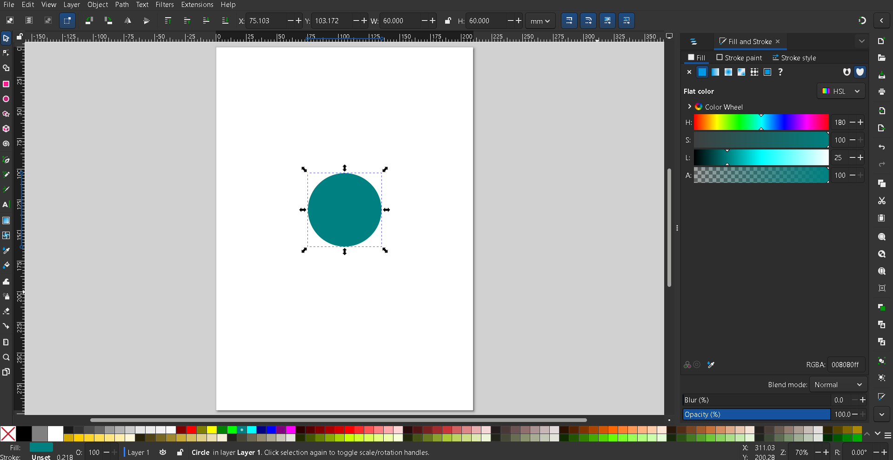
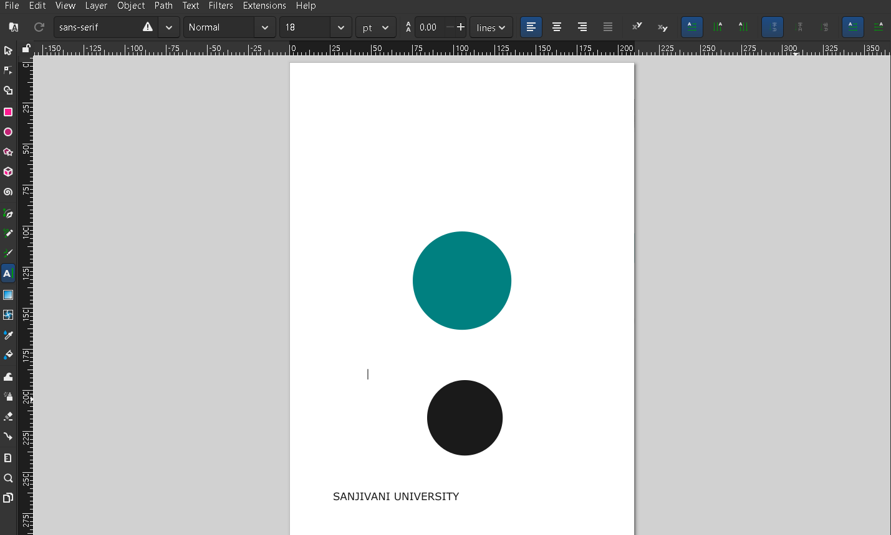
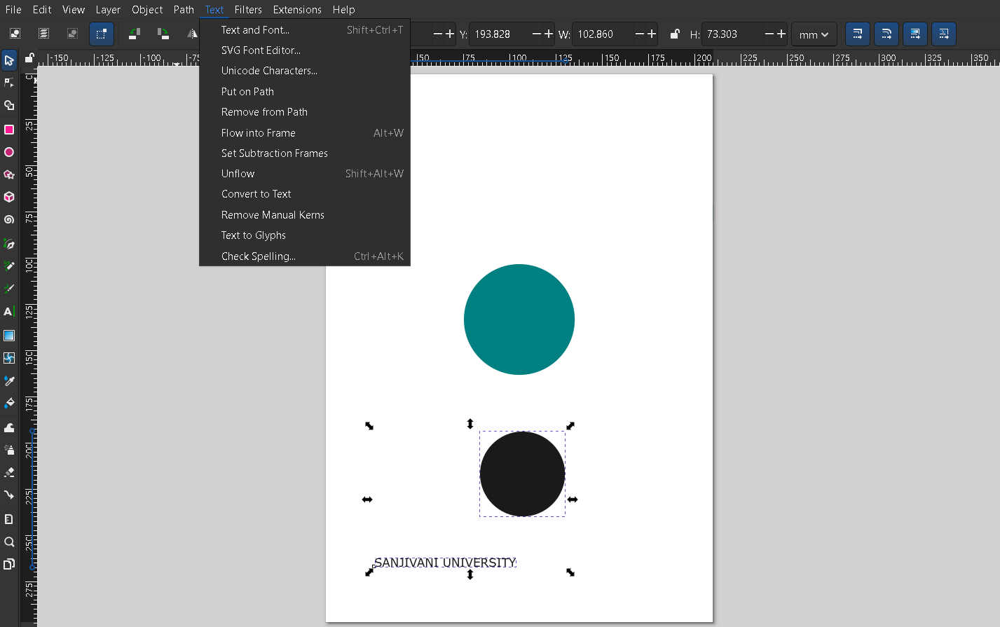
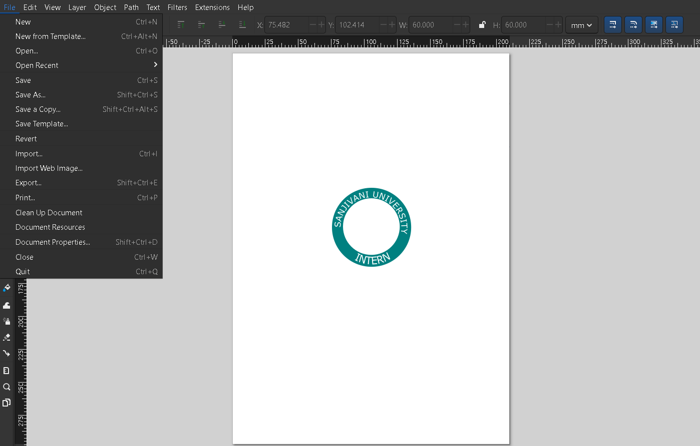
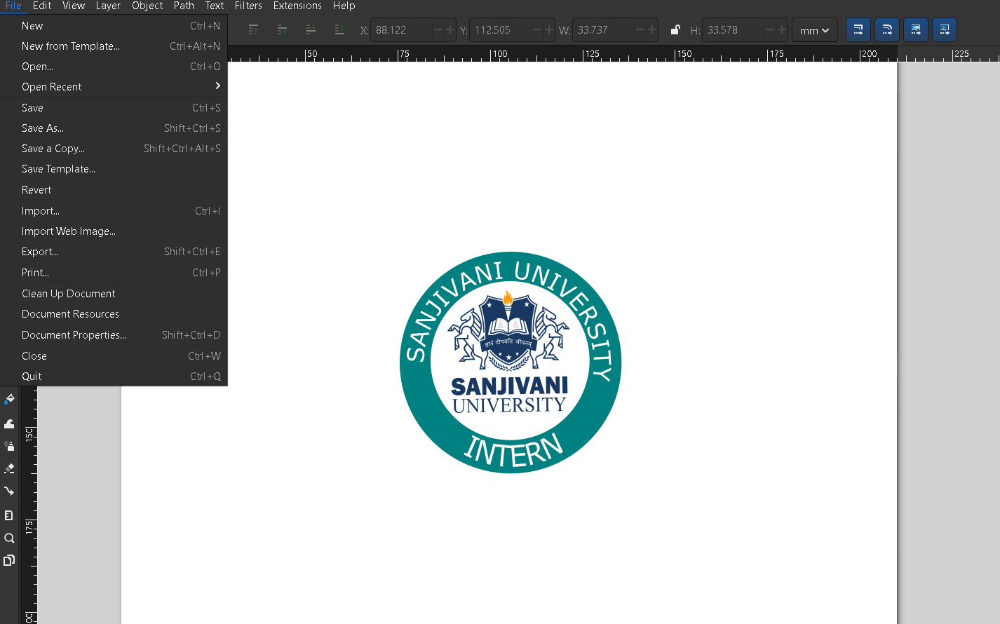

🎨 Day 4: Inkscape – Vector Graphics & Logo Design
📌 Introduction to Inkscape
Inkscape is mainly used for creating and editing logos because it provides powerful vector design tools. Logos made in Inkscape can be resized to any size without losing quality, which is very important for printing, branding, websites, and social media.
✨ Uses of Inkscape for Logos
- Create professional vector logos
- Design custom shapes and icons
- Add and edit text styles
- Use colors, gradients, and effects
- Export logos in PNG, SVG, PDF, and other formats
- Create scalable logos for banners, business cards, and websites
🎯 Purpose of Inkscape for Logo Design
The main purpose of Inkscape in logo designing is to help users create high‑quality, scalable, and professional logos freely without paid software.
🛠️ Installation Process of Inkscape
Step 1: Search Inkscape
Open your browser, go to Google, type “Inkscape” and press Enter.

Step 2: Open the Official Website
Click on the official Inkscape website (inkscape.org).

Step 3: Download Inkscape
Click on the Download option and choose your operating system (Windows, Mac, or Linux).

Step 4: Run the Installer
Open the downloaded setup file and click Next or Install.

Step 5: Complete Installation
Wait for the installation process to finish.

Step 6: Launch Inkscape
Click Finish and open Inkscape from the desktop or start menu.

🖌️ How to Make a Logo in Inkscape
Step 1: Open Inkscape

Step 2: Use a Shape
Make a circle and adjust its coordinates.

Step 3: Make Another Circle and Write Text Around It
1. Create another circle.
2. Write the text you want on the logo.


Step 4: Put Text on Path
Select both the text and the circle (black outline), then go to Text → Put on Path.

Step 5: Adjust Text Colour and Position
Select only the text, drag it to another circle, and change its colour to white (or a contrasting colour).

Step 6: Add Another Circle with Different Text and Flip
Create another circle with another text, apply “Put on Path”, then select both and click Object → Flip Vertical.

Step 7: Create Exclusion
Repeat the previous step, create a new circle, place it inside the green circle, and click Path → Exclusion to create a cut‑out effect.

Step 8: Import an Image (Optional)
You can import an image from your documents using File → Import.

Step 9: Save the Logo
Go to File → Save As. Choose SVG (source) or PNG (raster). Name your file and save.

📌 Key Takeaways
- Inkscape is a free, powerful vector graphics editor – perfect for logo design.
- Vector graphics are resolution‑independent (can be scaled infinitely).
- The “Put on Path” feature allows text to follow any curve – essential for circular logos.
- Using “Exclusion” (Path menu) creates hollow shapes (like rings).
- Inkscape supports layers, gradients, Bézier curves, and many tools for advanced design.
- Final logos can be exported to PNG, SVG, PDF, and other formats suitable for web, print, and branding.
🎯 Conclusion
Inkscape is a useful and free software for creating professional logos and vector designs. It provides easy‑to‑use tools for drawing, editing, coloring, and designing scalable graphics without losing quality. Inkscape is widely used by students, designers, and beginners for logo creation, illustrations, and graphic design projects. It is a powerful alternative to paid design software and helps users improve their creativity and design skills.